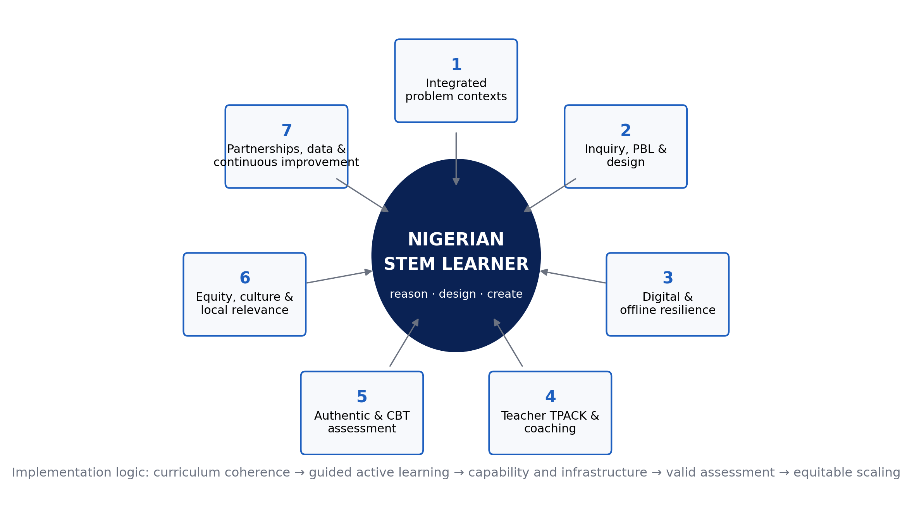

CHIATECH JOURNAL
SETEHEM · VOLUME 1 · ISSUE 1 · JULY 2026 · e023
PIONEER PUBLICATION · ACCEPTED ARTICLE · REVIEW & CONCEPTUAL ARTICLE · STEM EDUCATION · CURRICULUM & PEDAGOGY · DIGITAL RESILIENCE · EQUITY
Rethinking STEM Teaching and Learning in Nigeria: An Integrated, Inquiry-Driven and Digitally Resilient Framework for the Revised Curriculum Era
CHIA Shiaondo Kenneth
CHIATECH Solutions and Resources Ltd, Abuja, Nigeria
ORCID: 0009-0009-6434-4586 · Correspondence: chiakenneth01@gmail.com
Article | Volume/Issue | Publication | ISSN | DOI |
|---|---|---|---|---|
e023 | 1(1) | Pioneer Issue · July 2026 | Pending assignment | Pending registration |
Abstract
Purpose: Nigeria’s revised school curriculum creates an opportunity to move STEM education from subject coverage toward integrated problem solving, practical competence and purposeful technology use. This article critically synthesizes the author’s STEM reform manuscript, current curriculum policy and recent research to specify a practical framework for teaching and learning. Approach: A critical integrative review was used rather than a systematic review. The synthesis combines the source manuscript’s constructivist and interdisciplinary argument with official Nigerian curriculum documents, recent integrated-STEM evidence and two author-supplied Gwagwalada field summaries: a survey of 150 STEM teachers and an evaluative CBT case involving 200 students and 15 administrators. Findings: Contemporary evidence converges on integration, real-world problems, inquiry, design and teamwork as core features of integrated STEM. The local summaries identify implementation constraints that matter for Nigeria: only 28% of surveyed teachers reportedly used digital tools actively in practical STEM, 72% reported infrastructure deficits, 65% reported insufficient digital skills and 84% perceived stronger e-learning capacity as an added security resilience measure. In the CBT case, result-processing time reportedly fell by 85%, 76% of students developed high usability skills after orientation, and a 1:3 computer-to-student ratio plus weak alternative power constrained deployment. Contribution: The article proposes a seven-pillar Nigerian STEM implementation framework linking integrated problem contexts, guided inquiry/PBL/design, digital and offline resilience, teacher capability, authentic assessment, equity/local relevance, and partnership with continuous evaluation. Conclusion: Curriculum reform will produce stronger STEM outcomes only when pedagogy, teacher development, infrastructure, assessment and equity are implemented as one system rather than as separate projects.
Keywords: STEM education; Nigeria; revised curriculum; inquiry-based learning; problem-based learning; design thinking; teacher capacity; e-learning; CBT; equity
1. Introduction
Nigeria’s STEM challenge is not simply whether science, technology, engineering and mathematics appear on a timetable. The more consequential question is how learners experience those disciplines: as separate bodies of examinable facts, or as connected ways of investigating and solving problems that matter in their communities and future work. The author’s source manuscript argues that subject silos, theory-heavy instruction, rote recall, uneven resources and limited teacher preparation weaken the practical and creative promise of STEM education in Nigeria. It proposes integration, inquiry and project/problem-based learning, design thinking, purposeful technology use, explicit competency development and stronger attention to equity.
The policy environment has since become more favourable to implementation. The Federal Government’s revised curriculum, announced in 2025, reduced subject overload and emphasized a more focused, skill-driven structure; NERDC now hosts revised Senior Secondary Education Curriculum materials for SSS1–SSS3. This creates a timely policy window: fewer subjects should not simply mean fewer syllabi to memorize; it should create room for deeper learning, practical work and coherent assessment.
Recent scholarship also provides a clearer international evidence base. A 2024 systematic review of 27 integrated STEM/STEAM framework articles found broad agreement around five principles—integration, real-world problems, design, inquiry and teamwork—while highlighting persistent ambiguity about how those principles should be operationalized and assessed (Portillo-Blanco et al., 2024). The implementation problem is therefore one of instructional architecture: translating broad reform language into repeatable classroom, school and system practices.
2. Approach to the Review and Framework Development
This article is a critical integrative review and framework-development study. It does not claim the exhaustive search, screening and risk-of-bias procedures of a systematic review. Four evidence streams were synthesized: (1) the author’s substantive review manuscript on rethinking STEM teaching and learning in Nigeria; (2) current Nigerian curriculum and higher-education policy documents; (3) selected recent peer-reviewed research on integrated STEM, active learning and education–workforce alignment; and (4) two author-supplied Gwagwalada field summaries used as contextual evidence rather than as datasets for reanalysis.
The synthesis was organized around a practical question: what conditions must operate together if the revised curriculum is to produce learners who can investigate, model, design, compute, collaborate and communicate? Concepts were retained when they were supported by the source manuscript and aligned with contemporary evidence; unsupported numerical claims and template language were removed. Because raw instruments and datasets for the two local studies were not supplied, their figures are reported as study-summary findings and are not pooled, recomputed or generalized beyond their settings.
3. From “More STEM” to Better STEM
3.1 Integration around authentic problems
Integrated STEM is more than placing four subject labels inside one lesson. Quality integration requires a problem or design challenge that genuinely needs knowledge from more than one discipline. A water-quality challenge, for example, can require scientific sampling, mathematical analysis, sensor or data technology, and engineering decisions about treatment or distribution. Integration gives each discipline a reason to be used; it should not dissolve disciplinary rigor.
3.2 Guided inquiry, problem/project-based learning and design
Constructivist and sociocultural perspectives in the source manuscript correctly foreground active meaning-making, collaboration and scaffolding. However, “active” does not mean minimally guided. Inquiry is strongest when teachers structure questions, evidence, representations and checkpoints according to learner expertise. Project and problem-based learning similarly require explicit conceptual teaching, milestones and feedback. Design thinking adds iterative problem framing, user perspective, prototyping and testing—features particularly useful when Nigerian STEM learning is connected to local challenges such as energy access, water, food systems, health, mobility and waste.
3.3 Digital technology as a learning tool and resilience layer
Technology integration should be judged by what it enables learners to do: simulate, measure, visualize, code, collaborate, access data, receive feedback or continue learning when physical access is disrupted. This is especially important where laboratories, connectivity, power reliability or security conditions are uneven. A resilient model therefore combines physical practical work with offline-capable digital resources, downloadable simulations, local servers where appropriate and planned alternatives for periods when learners cannot safely assemble on site.
4. Nigeria-Specific Implementation Evidence
4.1 Teacher digital capacity and infrastructure
An author-supplied descriptive survey summary reports responses from 150 STEM teachers in Gwagwalada Area Council, Abuja. In that study summary, 28% of teachers were actively using digital tools in practical STEM lessons, 72% reported serious infrastructure deficits, 65% reported insufficient digital skills, and 84% believed stronger e-learning platforms could provide an additional security benefit by reducing dependence on physical presence during localized threats. These figures should be interpreted as local descriptive evidence: the supplied abstract did not include the sampling frame, item wording, reliability statistics or raw response file.
4.2 Assessment modernization through CBT
A second author-supplied evaluative case from Christ Anglican College, Gwagwalada, involved 200 senior secondary students and 15 examination administrators. The study summary reports an 85% reduction in result-processing time, movement toward near-real-time scoring, 76% high usability skills after orientation, and no manual grading errors or missing scripts during the observed deployment. Constraints included weak alternative power and a computer-to-student ratio of 1:3. The case demonstrates an important principle: assessment technology can improve turnaround and administrative control, but benefits depend on orientation, power, devices and offline continuity.
4.3 What the local evidence does—and does not—show
Taken together, the two Gwagwalada summaries do not prove that e-learning automatically solves insecurity or that CBT automatically improves learning. They do show why curriculum reform cannot be separated from implementation capacity. Teacher skill, infrastructure, assessment systems, electricity and security planning are part of STEM pedagogy because they determine whether intended practical learning can actually occur.
5. A Seven-Pillar Framework for Nigerian STEM Implementation

Figure 1. Seven-pillar implementation architecture for a reimagined Nigerian STEM system. The learner remains central; the pillars are mutually dependent rather than a sequence of isolated initiatives.
Table 1. From policy aspiration to observable practice.
Pillar | What it means in practice | Minimum evidence of implementation |
|---|---|---|
1. Integrated problem contexts | Units organized around authentic Nigerian challenges requiring two or more STEM disciplines | Problem brief identifies disciplinary contributions and a tangible outcome |
2. Guided inquiry/PBL/design | Learners investigate, model, design, test and revise with structured teacher guidance | Lesson sequence includes questions, evidence, design decisions, feedback and reflection |
3. Digital/offline resilience | Technology extends practical work and continuity rather than serving as decoration | Offline/downloadable resources, power contingency and data-protection plan |
4. Teacher capability | Continuous subject pedagogy + digital/TPACK development, coaching and peer planning | Demonstrated lesson redesign and observed classroom use—not attendance certificates only |
5. Authentic and CBT assessment | Assessment measures reasoning, practical application and timely feedback | Rubrics, performance tasks, item analysis and reliable digital administration |
6. Equity and local relevance | Gender, disability, geography, language and resource constraints are designed for explicitly | Participation/access indicators disaggregated and barriers acted upon |
7. Partnerships and improvement | Schools connect to communities, industry, universities and data-informed review | Partner challenge briefs, resource sharing, teacher support and termly improvement metrics |
6. Teacher Development as the Critical Enabler
The framework places teacher capability at its center because integration raises rather than lowers the demand for pedagogical expertise. Teachers must know when disciplinary boundaries matter, how to scaffold inquiry, how to diagnose misconceptions, how to choose technology for a learning purpose, and how to assess processes as well as answers. One-off digital-skills workshops are unlikely to be sufficient. A stronger model combines short focused learning modules, collaborative lesson design, demonstration teaching, coaching, classroom observation and evidence of student work.
Teacher development should also be differentiated. A teacher who is confident in subject knowledge but not digital tools needs a different pathway from one who can operate technology but lacks inquiry-design skills. School leaders need their own training in scheduling, procurement, power contingency, data protection and instructional observation. The relevant outcome is not “teachers trained” but “teachers consistently implementing better learning tasks.”
7. Assessment: Aligning What Nigeria Teaches with What It Rewards
Assessment exerts a strong backwash effect on teaching. If high-stakes and school-level tests reward recall almost exclusively, teachers face pressure to return to lecture-and-copy routines regardless of curriculum language. Reform therefore needs a mixed assessment architecture: selected-response items for breadth and efficient feedback; constructed-response items for reasoning; practical/performance tasks for investigation and design; portfolios for extended projects; and CBT systems that improve administration without narrowing the construct being assessed.
The Gwagwalada CBT case is useful here. Faster processing and elimination of manual workflow errors can improve assessment operations, but a digital delivery platform does not by itself create better questions. Item design, test security, accessibility, device availability and psychometric review remain essential. Technology should modernize the assessment system while preserving validity.
8. Policy and Implementation Priorities
Level | Immediate priority | 12–24 month indicator |
|---|---|---|
Federal/NERDC/assessment bodies | Publish implementation exemplars linking revised curricula to integrated tasks and assessment blueprints | Common task banks, practical exemplars and aligned examiner guidance |
States/FCT | Map power, laboratory, device, connectivity and teacher-capability gaps | School-level readiness dashboard and targeted resource plans |
School leadership | Create protected collaborative planning time and practical STEM schedules | Termly integrated projects and observation evidence |
Teacher training institutions | Embed inquiry, PBL/design, TPACK and assessment literacy in preservice/inservice programmes | Trainees demonstrate complete lesson cycles with evidence of learner reasoning |
Industry/universities/community | Co-design local challenge briefs, mentorship and resource support | Number and quality of sustained problem-based partnerships |
Researchers | Evaluate implementation fidelity, learning, equity, cost and resilience—not only attitudes | Open instruments, transparent methods and multi-site outcome studies |
9. Limitations
This article is an integrative conceptual synthesis, not a systematic review. Selection of external studies was purposive and cannot support bibliometric claims about the full literature. The two Gwagwalada studies were available only as condensed study summaries; sampling details, instruments and raw data were not available for verification or reanalysis. Their statistics are therefore used to illuminate implementation conditions rather than to estimate prevalence for Abuja or Nigeria. The proposed framework should be tested through implementation studies that report fidelity, cost, subgroup outcomes and learning measures over time.
10. Conclusion
Nigeria’s revised curriculum can become a platform for deeper STEM learning only if reform reaches the level of daily classroom activity. The evidence synthesized here points to a coherent direction: integrate disciplines around real problems; use guided inquiry, problem/project-based learning and design; treat digital systems as learning and resilience infrastructure; develop teachers continuously; align assessment with reasoning and practical competence; design for equity and context; and institutionalize partnerships plus improvement data. The central reform target should be the quality of learner activity—not the number of STEM labels in the curriculum.
Declarations
Declaration | Statement |
|---|---|
Ethics | Not applicable to the review/framework component. Two author-supplied local study summaries are cited only as contextual evidence; no participant-level data were accessed for this synthesis. |
Funding | No external grant funding is declared. |
Competing interests | The author declares no competing interests. |
Data availability | No new dataset was generated. The two contextual field studies were supplied as manuscript abstracts without raw data. |
Author contributions | Chia Shiaondo Kenneth: conceptualization, source review manuscript, local field-study summaries, framework development and manuscript authorship. |
AI/editorial preparation | The final article was substantively edited, evidence-checked and formatted from supplied materials plus current public scholarship; template instructions and unsupported claims were removed. |
References
Chia, S. K. (2026a). Assessing teacher capacity for e-learning as a security strategy towards digital technology adoption in STEM education in Gwagwalada Area Council, Abuja [Unpublished research manuscript]. CHIATECH Solutions and Resources Ltd.
Chia, S. K. (2026b). The implementation of a computer-based testing (CBT) system in senior secondary schools (SS1–3): A case study of Christ Anglican College, Gwagwalada, Abuja [Unpublished research manuscript]. CHIATECH Solutions and Resources Ltd.
Federal Ministry of Education. (2025, September 3). Lighter load, stronger minds: FG overhauls curriculum for a smarter generation [Press release]. Abuja, Nigeria.
Kelley, T. R., & Knowles, J. G. (2016). A conceptual framework for integrated STEM education. International Journal of STEM Education, 3, 11. https://doi.org/10.1186/s40594-016-0046-z
Nigerian Educational Research and Development Council. (2025–2026). New revised Senior Secondary Education Curriculum (SSS1–SSS3). Abuja, Nigeria: NERDC.
Portillo-Blanco, A., Deprez, H., De Cock, M., Guisasola, J., & Zuza, K. (2024). A systematic literature review of integrated STEM education: Uncovering consensus and diversity in principles and characteristics. Education Sciences, 14(9), 1028. https://doi.org/10.3390/educsci14091028
World Bank. (2025). Nigeria—Skill demand trends: Insights from online job vacancy data. Washington, DC: World Bank Group.
Wright, G. W., & Delgado, C. (2023). Generating a framework for gender and sexual diversity-inclusive STEM education. Science Education, 107(3), 713–740.
Suggested citation: Chia, S. K. (2026). Rethinking STEM teaching and learning in Nigeria: An integrated, inquiry-driven and digitally resilient framework for the revised curriculum era. CHIATECH JOURNAL, 1(1), e023. DOI pending registration.
© 2026 Chia Shiaondo Kenneth. Author retains copyright. Published by CHIATECH Solutions and Resources Ltd under CC BY 4.0.